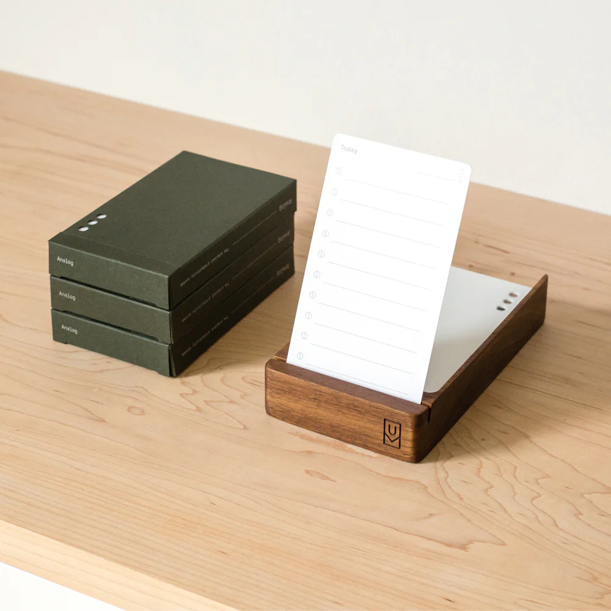
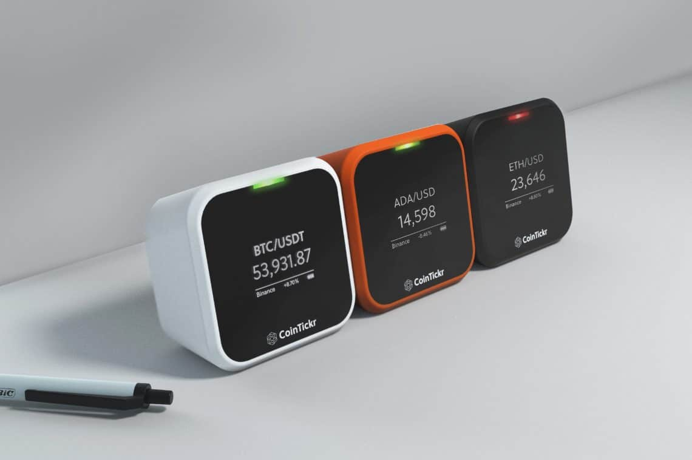

<div class="textcontainer">
<br></br>
<h3>Week 1: Final Project Proposal</h3>
<p class="margin"></p>
My 3 best ideas for my final project.
<p class="margin"></p>
<h4>Idea 1: E-Ink To-Do</h4>
<p class="margin"></p>
I kinda hate buying notecards all the time, so a little e-ink to-do list would be nice. Maybe it has buttons to check off each task and just stays on my desk. Super simple, no distractions.
<br></br>

<p class="margin"></p>
<h4>Idea 2: E-Ink Dashboard</h4>
<p class="margin"></p>
Would be cool to have an e-ink dashboard that shows live Shopify sales, crypto, or stocks. Just something I can glance at so I don’t have to keep checking my phone. Could customize what shows up.
<br></br>

<p class="margin"></p>
<h4>Idea 3: Movement Band</h4>
<p class="margin"></p>
A wristband that just vibrates every so often to remind me to get some movement. Often forget that I'm sitting for a long time so would be nice to have a reminder.
</div>